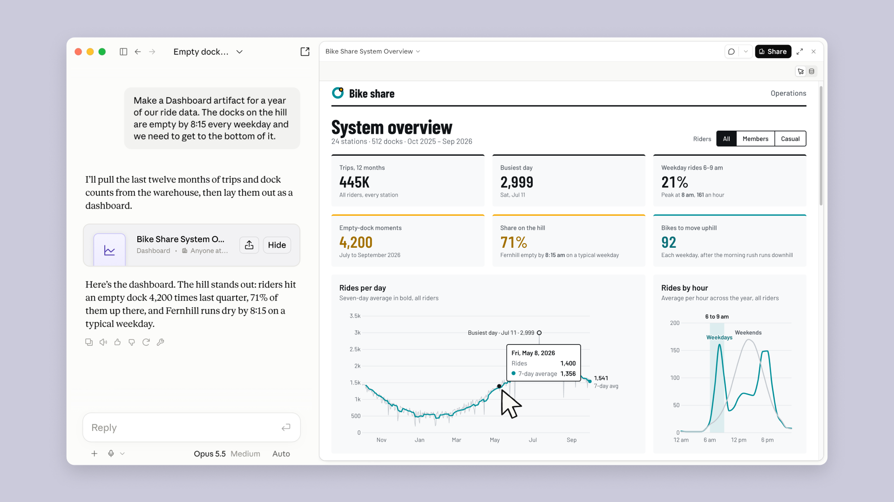

科技產品 T1

官方Dashboards示範，圖中數據為原廠展示，非本站或使用者的營運資料。 Anthropic／Claude
Claude 推出 Dashboards 與 Motion 測試，整合資料查詢與可編輯動畫
發佈時間
Anthropic／Claude Dashboards、Claude Motion
Dashboards可從已連接的公司資料建立更新中的儀表板，Motion則把文字、圖表及影像寫成可修改的動畫程式碼。
- Dashboards在付費方案測試，可查看圖表背後查詢與更新時間。
- Motion在Team及Enterprise測試，可修改文字、數字及時序，並匯出MP4；不是影片生成模型。
- Enterprise的兩項測試預設關閉，須管理員啟用；不代表所有帳號自動取得。
完整報告收合報告
事件背景與影響
使用者能由靜態報告走向可檢查查詢的圖表及動畫說明，但連接器權限與內容正確性仍需管理。
事件與發佈依據
官方10/08公告首段確認beta及方案，不以後來教學文章日期當發布日。
收錄紀錄
以Claude與Motion、Dashboard組合查最近十四份日報無命中，再核對同窗產品表，未見本次獨立功能。
尚待確認
仍為beta；資料與查詢應核對。本文未實測使用者帳號，不把原廠展示等同所有資料來源均能可靠連接。
相關實體與概念
Anthropic、Claude、資料連接器、儀表板、動畫、Artifacts
科技產品 T2
Plex 串接 Fandango 電影票，讓美國使用者從片名頁前往購票
發佈時間
Plex、Fandango／院線電影票入口
美國Plex使用者查看正在上映的電影時，可由片名頁前往Fandango查場次並購票，整合也提供廣告轉換歸因。
- 購票在Fandango完成，不是Plex提供免費院線電影或取代售票系統。
- 官方發布範圍為美國，不能推論台灣戲院同步支援。
- 整合使用Kochava歸因，讓片商及廣告主衡量探索到購票的轉換。
完整報告收合報告
事件背景與影響
影音探索平台把推薦延伸到實體戲院消費，同時增加觀看意圖與廣告成效資料的商業用途。
事件與發佈依據
Plex原始新聞稿10/15 11:00 EDT，明載Starting today。
收錄紀錄
Plex與Fandango、電影票組合查10/05–10/18十四份日報無命中，再核對同窗產品表，本次未收錄。
尚待確認
實際入口仍可能受裝置與部署影響；官方商業效益說法不是已驗證的票房增幅，資料用途應核對相關隱私設定。
相關實體與概念
Plex、Fandango、Kochava、院線電影、票務、廣告歸因
全球焦點 1
加拿大 Wainwright 基地火災確認四名軍人死亡，數十人住院
發佈時間
阿爾伯塔Wainwright軍事基地訓練區火災造成四名軍人死亡、多人住院，官方正調查火勢快速擴大的原因。
- 火災於週六當地約16時開始，強風促使火勢迅速蔓延。
- 官員週日稱39人住院，其中19人情況危急。
- 總理宣布聯邦建築降半旗，事故原因仍待正式調查。
完整報告收合報告
事件背景與影響
大型訓練事故涉及軍人安全、草地火災管理及緊急醫療動員，原因調查應與初期傳聞分開。
事件與發佈依據
Reuters轉載10/18 23:06 UTC，採週日官方傷亡確認與說明，不只重述週六起火。
收錄紀錄
十四份日報未收錄此起基地火災；與加拿大其他政治或軍事消息不同。
尚待確認
初期匿名消息曾稱七死，本文採後續官方確認四死；不得據此認定全部失蹤與傷亡已最終清點或推論蓄意攻擊。
相關實體與概念
加拿大、Wainwright、軍事訓練、野火、緊急醫療
全球焦點 2
續報｜烏克蘭新一輪無人機攻擊引燃聖彼得堡油品設施
發佈時間
聖彼得堡油品出口碼頭與油庫發生火災，俄方稱多地遭大規模無人機攻擊，能源設施再度成為戰事焦點。
- 當地官員確認油品設施起火，並通報一死及五人受傷。
- 俄國防部聲稱攔截1,015架無人機；這是俄方統計，不是獨立確認的發射量。
- 烏方同日亦通報俄軍攻擊與能源設施受損，雙方主張需分開歸屬。
完整報告收合報告
事件背景與影響
攻擊影響能源運輸與城市設施，也凸顯所謂能源停火並未形成可驗證的穩定保護。
事件與發佈依據
AP確認週日新攻擊，截點前版本更新至21:52 UTC；更新時間不冒充首發。
收錄紀錄
10/16已報恢復攻擊俄國煉油設施的決定；今日新增聖彼得堡油品設施火災與俄方攔截統計。
尚待確認
攔截量、目標損害及軍事效果尚未獨立完整核實；不將官方主張寫成已確證全貌。
相關實體與概念
烏克蘭、俄羅斯、聖彼得堡、無人機、油品出口、能源設施
全球焦點 3
續報｜剛果伊波拉擴及第八省，北烏班吉確認兩例含一人死亡
發佈時間
剛果民主共和國北烏班吉省新增兩例伊波拉病例，其中一人死亡，疫情地理範圍持續擴大。
- 衛生部稱兩名患者均為二十多歲男性，位於Wapinda健康區。
- 當地毗鄰已出現病例的Bas-Uele省。
- AP報導中非共和國尚無確診，不能把鄰近風險寫成已跨境傳播。
完整報告收合報告
事件背景與影響
新省份接近中非共和國邊境，人口流動、道路與通訊限制使追蹤及照護更加困難。
事件與發佈依據
AP／KSAT首發10/18 16:43:09 UTC；新增北烏班吉病例為週日官方通報。
收錄紀錄
10/14已報確診逾九千與七省疫情；今日新增第八省及邊境健康區病例。
尚待確認
通報可能落後實際感染，地理擴散與個別地區病例下降可同時存在；本文不是個人醫療建議。
相關實體與概念
剛果民主共和國、Ebola、Nord-Ubangi、Wapinda、接觸者追蹤
全球焦點 4
續報｜法國逮捕統計升至約二千四百人，馬克宏下令加強保護公共建築
發佈時間
法國政府在大規模抗議後召開緊急會議，馬克宏要求地方官員與市長保護公共建築及商家，必要時限制示威。
- 截點前AP正文稱全國至少2,400人被捕，早期標題仍保留1,800。
- Limoges市政廳遭嚴重焚毀，多地商店及公共設施受損。
- 部分示威者重傷事件另有調查，暴力責任不能泛指所有遊行參與者。
完整報告收合報告
事件背景與影響
政府處置由當日警力應對進入後續行政與司法程序，公共秩序和示威權保障須同時檢視。
事件與發佈依據
AP／ABC首發10/18 06:10 EDT，採截點前週日晚間講話及新統計。
收錄紀錄
10/18日報為週六示威與約400人被捕；今日新增正式維安指示、調查及統計上升，不只是政治措辭變化。
尚待確認
逮捕不等於定罪；政府對暴力團體的政治歸因亦不是所有個案的司法結論。
相關實體與概念
法國、馬克宏、公共秩序、示威權、警察問責、地方政府
全球焦點 5
澤倫斯基表示美國已恢復對烏情報共享，先前中斷已解除
發佈時間
烏克蘭總統稱，美方協助預警俄軍飛彈攻擊的情報共享曾短暫受阻，目前已恢復。
- 說法來自澤倫斯基在NBC《Meet the Press》的訪談。
- 烏克蘭依賴相關情報辨識高速彈道飛彈威脅。
- 川普先前表示美方仍在共享情報，與烏方所述短暫中斷需並列。
完整報告收合報告
事件背景與影響
預警資訊直接影響防空部署，應把具體服務狀態與對盟友關係的概括判斷分開。
事件與發佈依據
Reuters10/18 19:30 IST報導當日NBC受訪內容。
收錄紀錄
近期日報的制裁、柴油及戰場攻擊不同於本次情報服務恢復；此為新的能力狀態，非重刊政治立場。
尚待確認
未公開中斷範圍、起訖及技術細節；不推定所有衛星服務或武器使用限制同步解除。
相關實體與概念
美國、烏克蘭、情報共享、飛彈預警、防空、NBC
全球焦點 6
Trudy 颶風沿墨西哥太平洋岸移動，強降雨與土石流風險持續
發佈時間
Trudy沿墨西哥西南及中西部海岸平行移動，帶來強風及豪雨，預報晚間開始快速減弱。
- Reuters引述NHC稱中心約在Manzanillo以西240公里，最大持續風速約165公里／小時。
- Michoacan、Colima及Jalisco部分地區有豪雨、洪水與土石流風險。
- 預測將往Baja California Sur以南移動；實際路徑仍會修正。
完整報告收合報告
事件背景與影響
即使中心不登陸，沿岸強浪及山區累積雨量仍可造成生命危險，減弱預測不代表風險立即消失。
事件與發佈依據
Reuters週日報導當日上午位置與強度，不使用週五舊預報作為今日進展。
收錄紀錄
最近十四份日報未收錄Trudy本次事件；與其他墨西哥風暴分開。
尚待確認
預報不是已發生結果；當地居民應依即時官方警示，不把本期凍結截點資訊當現時疏散指引。
相關實體與概念
墨西哥、Trudy、NHC、熱帶氣旋、洪水、土石流
全球焦點 7
川普公開背書納坦雅胡，介入以色列國會選舉最後階段
發佈時間
川普週日透過公開訊息支持納坦雅胡連任，以色列國會選舉預定10月27日舉行。
- 川普把訊息直接寫給以色列人民，表明完全支持納坦雅胡。
- 納坦雅胡公開致謝。
- 民調未顯示任何陣營已有明確組閣路徑，不能把背書當選舉結果。
完整報告收合報告
事件背景與影響
美國總統的表態可能影響盟友選戰討論，但以色列政府仍須由國會席次與聯盟談判形成。
事件與發佈依據
Reuters／AOL10/18 15:12 UTC首發；其後更新不是另一項背書事件。
收錄紀錄
未見最近十四份日報收錄此次正式選舉背書；過往美以關係作背景，不占另一名額。
尚待確認
背書對投票的效果未明，首相不是由民眾直接單獨選出，仍取決於組閣。
相關實體與概念
美國、以色列、川普、納坦雅胡、Likud、國會選舉
全球焦點 8
JAXA 確認 MMX 火星衛星探測器發射時刻，台北二十日凌晨升空待命
發佈時間
JAXA公布MMX搭乘H3十號火箭的發射安排，目標日本時間10月20日04:41:03，前往火衛一Phobos採樣。
- 台北對應時間為10/20 03:41:03，發射場為種子島。
- 原廠保留發射期為10/21至11/9，保留期內時刻可能改變。
- 任務規劃約五年，目標2031年返地球；目前尚未升空或取得樣本。
完整報告收合報告
事件背景與影響
任務將嘗試把火星衛星物質送回地球，有助研究衛星來源；正式排程仍可能因天候或技術條件變動。
事件與發佈依據
JAXA10/18正式發布Launch time公告；不是將預定發射寫成已完成任務。
收錄紀錄
最近十四份日報未收錄此項發射時刻公告，舊任務目標僅作背景。
尚待確認
部分二手來源列較早的保留期截止日，本文採10/18原廠11/9；發射、著陸與返航均未完成。
相關實體與概念
JAXA、MMX、H3、Phobos、火星衛星、樣本返回
全球焦點 9
Wichita 球場車輛撞人案駕駛暫獲釋，警方等待毒物與車輛檢驗
發佈時間
堪薩斯州青少年足球賽遭皮卡車駛入、造成兩人死亡後，警方表示駕駛尚未被起訴，等待檢驗與調查。
- 罹難者為六歲男孩及三十五歲男子，兩人無親屬關係。
- 十人因撞擊受傷送醫，另有一人因非外傷性醫療問題送醫，共十一人。
- 駕駛已獲釋，警方等待毒物報告及車輛檢查，場地活動暫停。
完整報告收合報告
事件背景與影響
公共活動場地安全與傷亡救援之外，駕駛意圖及車輛狀況必須依證據判斷，不能直接稱為蓄意攻擊。
事件與發佈依據
KMUW10/18 14:45 CDT原創採訪，新增週日警方釋放與調查程序，不把週六事故單獨翻新。
收錄紀錄
最近十四份日報未見此案；選取週日程序進展，與其他車輛攻擊事件不混用。
尚待確認
十人受傷與十一人送醫是不同口徑，不是簡單矛盾；尚未起訴不代表已排除責任，亦未證實動機。
相關實體與概念
美國、Wichita、Stryker Sports Complex、足球、事故調查
全球焦點 10
續報｜教宗良十四世實際主持術後三鐘經，表示將逐步恢復職務
發佈時間
教宗週日向聖伯多祿廣場信眾致謝，談及住院經驗，表示將漸進恢復活動。
- 教宗感謝醫師、護理人員與為他祈禱的人。
- 他在星期二接受肺部手術，星期六出院。
- 先前接見活動取消至10/20；逐步恢復不等於全部接見立即重開。
完整報告收合報告
事件背景與影響
這是術後公開職務恢復的具體節點，但不能將短暫露面解讀為所有健康與行程問題已解決。
事件與發佈依據
Vatican News可見10/18 12:27 CEST，報導週日已進行的公開祈禱。
收錄紀錄
10/18日報為出院及翌日預定祈禱；本次從計畫進入實際主持與公開說明恢復步調。
尚待確認
後續行程依教廷與醫師評估，不自行判斷療程結束或預後。
相關實體與概念
梵蒂岡、良十四世、三鐘經、公共職務、術後復原
研究備註
時間、來源與後續追蹤
研究截點 2026-10-19 08:00:31（Asia/Taipei）
研究時間與範圍
研究截點：2026-10-19 08:00:31（Asia/Taipei）。全球新聞：2026-10-18 08:00:31 至 2026-10-19 08:00:31（Asia/Taipei）。科技產品：2026-10-05 08:00:31 至 2026-10-19 08:00:31（Asia/Taipei）。